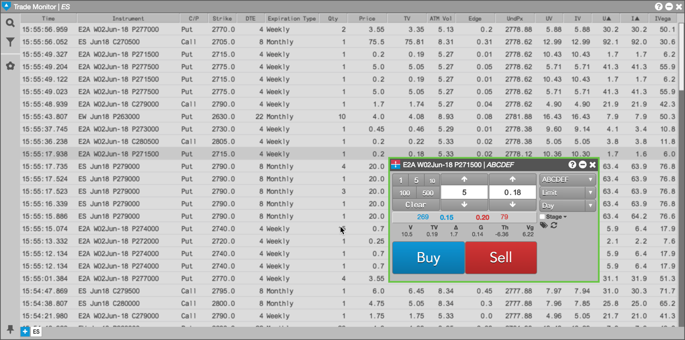
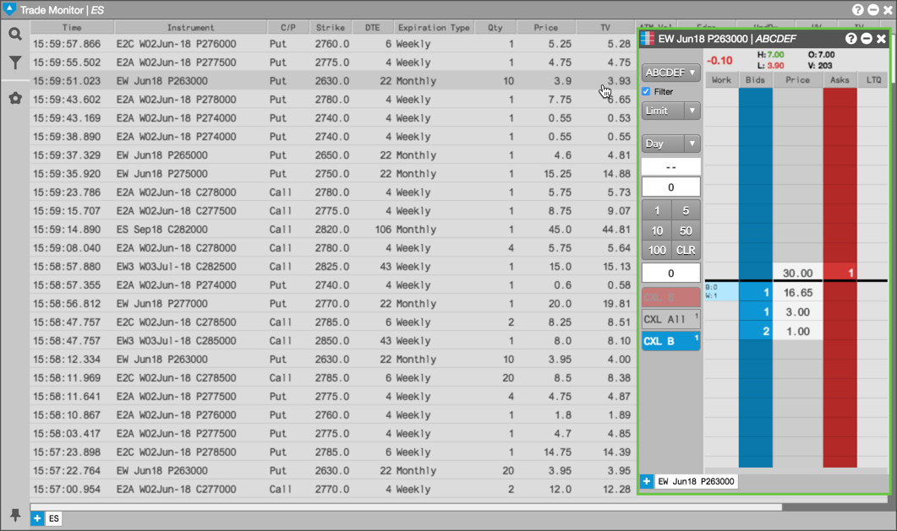
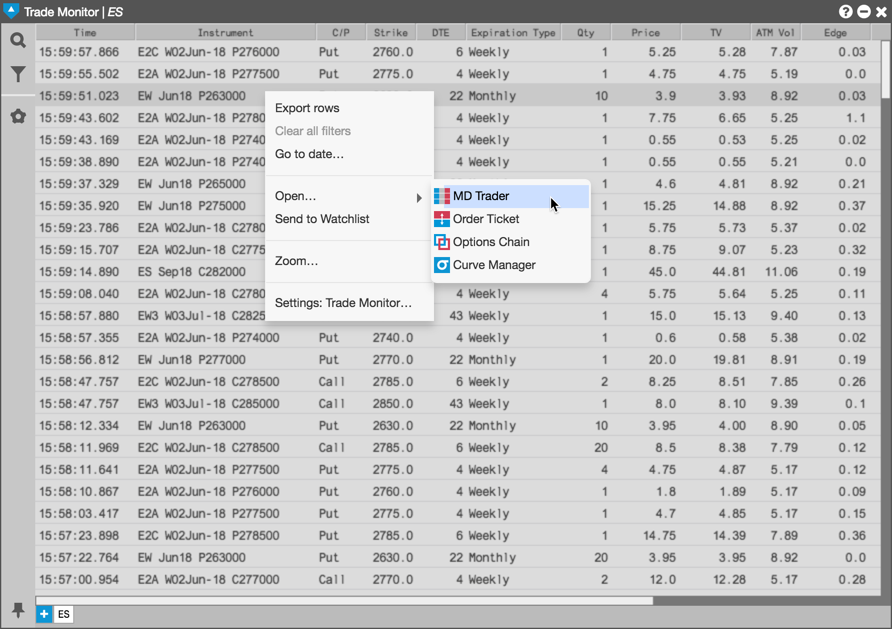
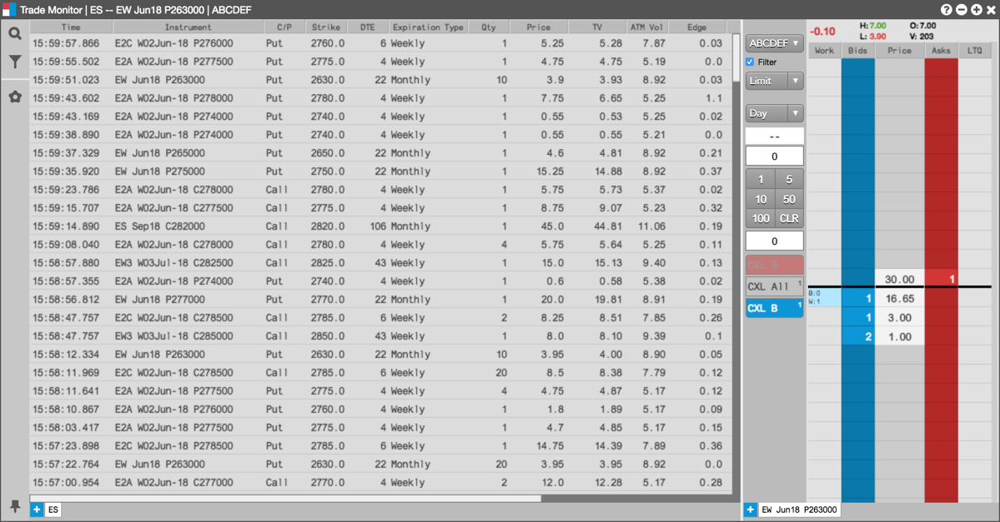

You can submit orders in the Options Trade Monitor by opening a floating order entry window (e.g., MD Trader®) or linked widget (e.g., Order Ticket).
To trade with a floating order entry order ticket:
Click in the TV column in the Options Trade Monitor to open an Order Ticket:

To trade with a floating order entry MD Trader:
Click the in the TV column in the Options Trade Monitor:

To trade with a grouped widget:
Right-click on the instrument to select Open and click on a widget (e.g., MD Trader®)
Right-click in the opened widget title bar to select Group widget... and create a widget group.

Enter an order in the docked (grouped) MD Trader widget.
The order appears in the Options Trade Monitor as well as in MD Trader. As you select an instrument in the Options Electronic Eye, it appears in the grouped MD Trader widget.
